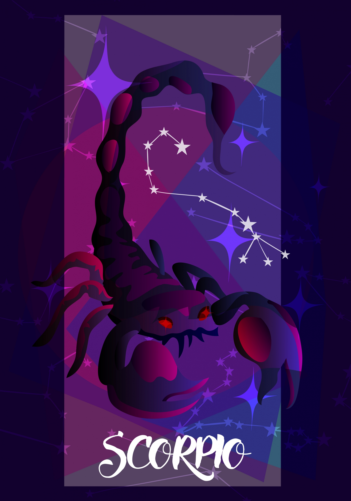

THE SCORPION | OCT 23 - NOV 21
SEDUCTIVE, PASSIONATE, INDEPENDENT
| Element: water | Polarity : Negative |
| Quality : Fixed | Ruling Planet: Pluto, Mars |
| Spirit Color : Black | Lucky Gem : Topaz & opal |
| Flower : Hibiscus & geraniums | Top Love Matches : Cancer |
| Ruling House : Eighth |
Passionate, independent, and unafraid to blaze their own trail no matter what others think, Scorpios make a statement wherever they go. They love debates, aren't afraid of controversy, and won't back down from a debate. They also hate people who aren't genuine, and are all about being authentic—even if authentic isn't pretty.Because of all of these traits, a Scorpio can seem intimidating and somewhat closed off to those who don't know them well. But what people don't realize is that even though Scorpio may seem brusque, as a water sign, they also are very in tune with their emotions, and sometimes may find themselves caught up in their feelings.
This leads to Scorpio's central conflict: Their feelings are what drives them and strengthens them, but their mutability can scare them and make them feel vulnerable and out of control. Because of this conflict, Scorpios, like their namesake, the scorpion, put up an outer shell and may seem prickly. But once people get beyond the shell, they find a loyal, loving person whose passion knows no bounds. Scorpio dives into all life has to offer with 110% enthusiasm. A Scorpio will be your most loyal friend, most dedicated employee—and your worst enemy, if they want to be.
In love, Scorpio can seem cautious at first, and may set up a series of "tests" for their potential partner, deciding to cross them off their list if they don't meet their demands. The trouble is, they tend to keep their partner out of the loop on what, exactly, they want, making their partner feel like they have to play mind reader. If a Scorpio and their partner can get past this initial hurdle, the connection will be intense, in both highs and lows. A Scorpio will love harder and fight harder than any other sign, and wants their partner to be absolutely honest. They will be—even if it's not what the partner wants to hear. In the bedroom, Scorpio is generous, imaginative, and always up for anything—all night long.
"You never know what you are capable of until you try."
So many other signs spend valuable time and energy beating around the bush, desperately trying to find an approach that makes the fewest waves when it comes to confronting a conflict. Not Scorpio. Blessed with a deep sense of self, Scorpio is always able to say exactly what's on their mind, even if it's not what people want to hear. Scorpio is forthright and honest, and those two characteristics commandeer a ton of respect, both at home and at work.
Repeat after us: It's all right to cry. Scorpio tries to hard to seem tough that they sometimes cut off their vulnerable side entirely, seeming prickly, uncaring, and cold to outsiders. While expressing emotion is scary, learning how to do it is key for Scorpio, since presenting an "I don't care" veneer can only work for so long before it get's exhausting!
Their empathy. Also it may not seem this way at first glance, watchful Scorpio can read a room very quickly and can clue into how everyone else is feeling. Because of this, they can immediately tune into someone who needs TLC and often knows the right thing to say or do to change the mood or tener of a room when it needs to be changed.
Ciara, Julia Roberts, Gabrielle Union, Matthew McConaughey, Drake, Ryan Reynolds, Katy Perry, Kris Jenner, Anne Hathaway, Ryan Gosling, Owen Wilson